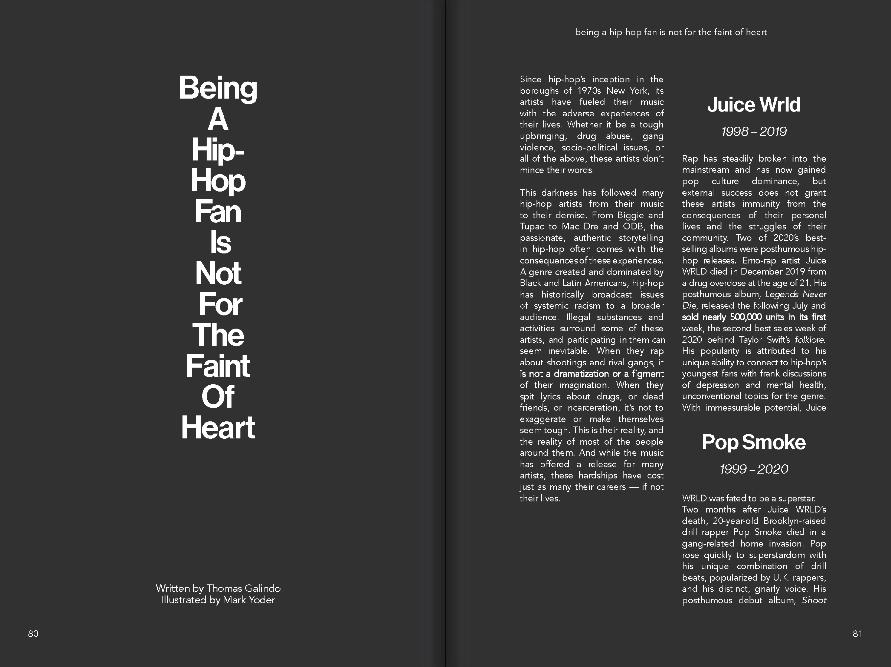
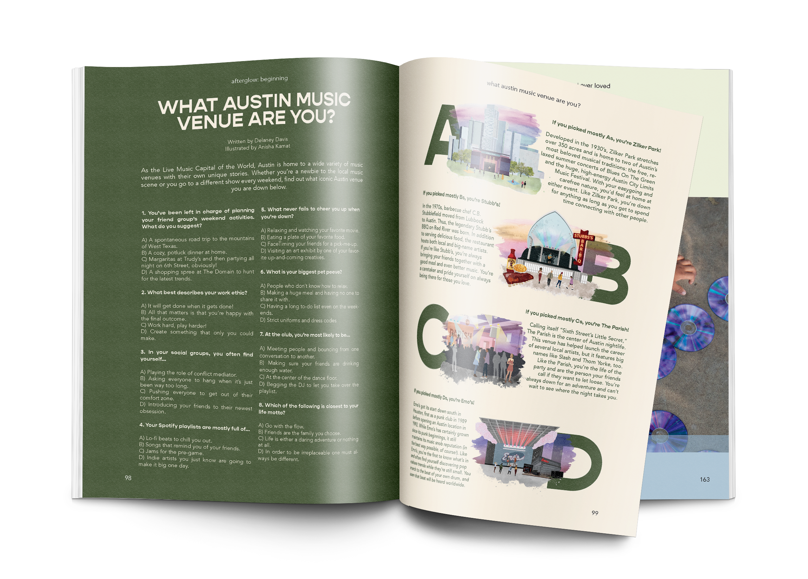

Afterglow Magazine
Issue 01: beginning + surviving
-
Role:
-
Creative Director
-
Category:
-
Printed Publication
-
Timeline:
-
2020 - 2021
-
Tools Used:
-
Adobe InDesign, Illustrator, Photoshop
Role: Creative Director
Category: Printed Publication
Timeline: 2020-21
Tools Used: InDesign, Illustrator, Photoshop
Overview
Afterglow is a student-run digital and print music publication founded in fall of 2018 at the University of Texas at Austin and as one of the founding members, I spearheaded
all things design. Afterglow promises an immersive, unpretentious look at music in Austin and everywhere else, pushing boundaries on how people view different artists, genres, and trends. I was the Creative Director for the
publication's first ever print issue titled: beginning + surviving.
Some of my responsibilities for this project included: art direction, editorial design, layout design, photography/editing, etc.
The following spreads are some that I helped bring to life.
"The Spirit of the '90s is Reborn in Hex Boyfriend"
For this profile of Hex Boyfriend, a local band that makes ‘90s-esque rock music, I referenced grunge magazines from that period. The cut-and-paste style of Hit Parader and similar publications inspired me to incorporate psuedo-3D elements: two polaroids and two stacks of printed photos, complete with shadows.

"How to Appreciate 'Women in Rock' without Alienating Them"
For this story, I provided the photographer and layout designer with art direction. The writer had focused on how press myths about a women’s movement in rock music had obscured the individual identities of female rockers, which I wanted to represent visually. We used double exposure photography and made use of props and reflections so that in each image, our models’ faces would be obscured. Mimicking film photography in the layout also allowed us to create a “movement” of images that was large on the page, but lacked specificity from photo to photo, warning against the generalizations the writer had discussed.

"Being a Hip-Hop Fan Is Not For The Faint Of Heart"
This story was a tribute to the large number of hip-hop artists who died young and an exploration of the public grief of their fans. Because the tone of the writing was heavier than most of the magazine, I wanted to make sure the visual style also stood out, while remaining sensitive to the topic. Instead of using photography or illustration, I asked the layout designer to focus on how color and typography could communicate ideas about the life and death of young voices. We decided that simplicity was the way to go. Black and white provided high contrast and depth, while the familiarity of Helvetica conveyed truth.

"What Austin Music Venue are You?"
In this quiz, we were presenting locations that were familiar to our audience in a context they wouldn’t expect. To communicate that visually, I decided to assign illustrations instead of photography, so that our readers would see the venues in a new way.
